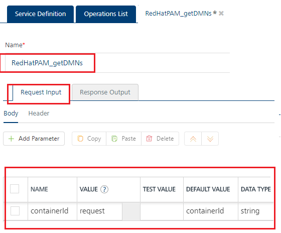
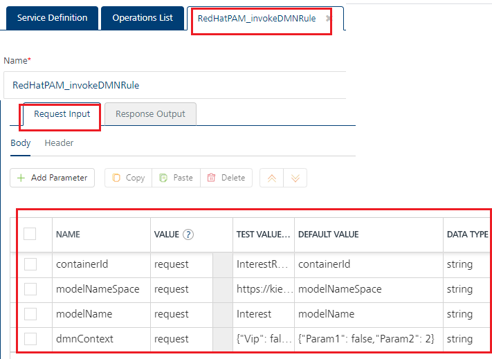

Red Hat PAM Adapter
Red Hat Process Automation Manager Adapter
Red Hat® Process Automation Manager (PAM) is an open-source business automation platform. Business enterprise users can access the centralized data repository to manage and deploy business processes, cases, and business rules. Refer to Red Hat Process Automation Manager.
The Red Hat PAM adapter in Foundry Console exposes the services and operations created using Red Hat PAM Business Central Interface.
To integrate a Red Hat PAM service in Volt MX Foundry, developers need to create a project in the Red Hat PAM and deploy it to KIE Server and then configure the Red Hat PAM adapter in Foundry Integration Services. After you publish the service, you can invoke the configured operations from the runtime server.
Red Hat PAM has primarily two components: Business Central and KIE Server:
- Business Central is used for decision creation and build projects.
- KIE Server is used for deploying the projects. Once the project is deployed, the configured APIs for accessing decisions/rules are hosted on the server.
Prerequisites
-
Red Hat PAM Server is installed on the host machine.
-
A project with DMN created using the Red Hat Process Automation Manager is deployed to KIE Server.
-
For invocation of processes APIs and case APIs, a project with process definition and case definition is deployed to KIE Server.
-
For invocation of task APIs, process definition and case definition with human tasks in a project are deployed to KIE Server.
-
A user is configured with the following user roles:
kie-serverrest-alladmin
Configuring a Red Hat PAM Adapter involves the following steps:
- How to Configure Service Definition for Red Hat PAM Adapter
- How to Create and Configure Operations for the Red Hat PAM Adapter
How to Configure Service Definition for Red Hat PAM Adapter
To configure a Red Hat PAM adapter in the Integration Service Definition tab, follow these steps:
- In the Name field, provide a unique name for your service. When you enter the name, the name is updated for the active service under the Services section in the left pane.
-
From the Service Type list, select
Red Hat PAM.Note: XML is selected, by default.
-
Provide the following details in the Connection Parameters section to create a Red Hat PAM Adapter.
Fields Description Version Select the version for the service. Connection URL Provide the base endpoint URL of the KIE Server REST API endpoint.For example : http://{host}:{port}/kie-server/services/rest/serverUser ID Type the user ID for the connection URL. Password Type the password for the user ID which you have entered. -
In the Authentication section, you can select an identity provider from Use Existing Identity Provider. This drop-down lists the identity providers created on the Identity page. If you select any identity provider, you have to enter valid login credentials.
Note: The Authentication section is optional.
-
For additional configuration of your service definition, provide the following details in the Advanced section.
Field Description Custom code To specify a JAR associated to the service, select one from the Select Existing JAR drop-down menu or click Upload New to add a new JAR file. Make sure that you upload a custom JAR file that is built on the same JDK version used for installing Volt MX Foundry Integration.
Important: Make sure that you upload a custom JAR file that is built on the same JDK version used for installing Volt MX Foundry Integration.For example, if the JDK version on the machine where Volt MX Foundry Integration is installed is 1.6, you must use the same JDK version to build your custom jar files. If the JDK version is different, an unsupported class version error will appear when a service is used from a device.API Throttling If you want to use API throttling in Volt MX Foundry Console, to limit the number of request calls within a minute. do the following:
In the Total Rate Limit text box, enter a required value. This will limit the total number of requests processed by this API.
In the Rate Limit Per IP field, enter a required value. With this value, you can limit the number of IP address requests configured in your Volt MX Foundry console in terms of Per IP Rate Limit.
To override throttling from Volt MX Foundry App Services Console, refer to Override API Throttling Configuration.
Note: In case of On-premises, the number of nodes in a clustered environment is set by configuring theVOLTMX_SERVER_NUMBER_OF_NODESproperty in the Admin Console. This property indicates the number of nodes configured in the cluster. The default value is 1. Refer to The Runtime Configuration tab on the Settings screen of App Services.
The total limit set in the Volt MX Foundry Console will be divided by the number of configured nodes. For example, a throttling limit of 600 requests/minute with three nodes will be calculated to be 200 requests/minute per node. This is applicable for Cloud and On-premises.Note: All options in the Advanced section are optional.
-
Enter the Description for the service.
- Click SAVE to save your service definition.
How to Create and Configure Operations for the Red Hat PAM Adapter
The Operations List tab appears only after the service definition is saved and authentication is successful using provided connection parameters.
Note: Click Operations List tab > Configure Operation. The Configured Operations list appears.
-
To create an operation, follow these steps:
-
Click SAVE & ADD OPERATION in your service definition page to save your service definition and display the New Operation tab for adding operations.
OR
Click Add Operation to add a new operation or from the tree in the left pane, click Add > Add New Operation. -
From the ADD OPERATION list, expand the
RedHatPAMand select the check boxes for the available operations. -
Click ADD OPERATION. The new operations are created under Configured Operations section.
-
Operation names are auto-generated in the format. The default name format of a Red Hat PAM operation is
<Group_name>_<selectedoperation's_name>. You can change the operation name if required.
For example,DMNs_invokeDMNRule. -
To configure an operation: Once you create operations for Red Hat PAM adapter, you can configure the operations such as configuring advanced configurations, adding test values, and fetching the response. Under Configured Operations, hover your cursor over the creates operation, click the Settings > Edit.
Note: To edit an operation, you can also click the operation from the service tree pane.
The system displays the selected operation in the edit mode. Provide the following details to configure the operation.
Fields Description Name The Name field is pre-populated with field names of the selected operation. You can edit this field. Operation Security Level It specifies how a client must authenticate to invoke this operation.
Select one of the following security operations in the Operation Security Level field
Authenticated App User – It restricts the access to clients who have successfully authenticated using an Identity Service associated with the app.
Anonymous App User – It allows the access from trusted clients that have the required App Key and App Secret. Authentication through an Identity Service is not required.
Public – It allows any client to invoke this operation without any authentication. This setting does not provide any security to invoke this operation and you should avoid this authentication type if possible.
Private - It blocks the access to this operation from any external client. It allows invocation either from an Orchestration/Object Service, or from the custom code in the same run-time environment.
Note: The field is set to Authenticated App User, by default. -
For additional configuration of request (or) response operations, provide the following details in the Advanced section.
Custom Code Invocation You can add pre and post processing logic to services to modify the request inputs. When you test, the services details of various stages in the service execution are presented to you for better debugging. All options in the Advanced section are optional. For more details, refer to Preprocessor and Postprocessor. Additional Configuration Properties Additional Configuration Properties allows you to configure service call time out cache response. For information on different types of configuration properties, refer Properties. Front-end API Front-end API allows you map your endpoint ](or) backend URL of an operation to a front-end URL. For detailed information, refer Custom Front-end URL. Server Events Using Server Events you can configure this service to trigger or process server side events. For detailed information, refer Server Events. Note: All options in the Advanced section for operations are optional.
-
Enter the Description for the operation.
-
After you create operations, they are configured with request and response parameters by default.
Important: Do not edit these parameter names under the NAME column for request and response.
The following table details pre-configured parameters for request and response operations:
Case Operations Request Input Parameters * Do not edit these param names Response Output Parameters Cases_addDynamicTaskToCase containerId caseId (IT-0000000008) dynamicTaskData {"name" : "RequestManagerApproval","data" : { "reason" : "Fixed hardware spec","caseFile_hwSpec" : "#{caseFile_hwSpec}" },"subject" : "Ask for manager approval again","actors" : "manager","groups" : "" } Response The Response of the Cases_addDynamicTaskToCase operation is "Dynamic task added successfully", Cases_cancelCaseInstance containerId caseId (IT-0000000008) destroy (true) The destroy param is optional. The Response of the Cases_cancelCaseInstance operation is "Response": "Case aborted successfully", Cases_closeCaseInstance containerId caseId (IT-0000000008) comments ("closing the case") The Response of the Cases_closeCaseInstance operation is "Response": "Case closed successfully", Cases_getCaseInstance containerId caseId (IT-0000000008) The Response of the Cases_getCaseInstance operation contains a details of a particular case ID. Cases_startCase containerId caseDefId (itorders.orderhardware) caseVariables { "case-user-assignments" : { "manager" : "pamAdmin", "supplier" : "supplier" }, "case-group-assignments" :{ "manager" : "", "supplier" : "caseSupplier" } } caseId The Response of the Cases_startCase operation includes the newly created case ID. Common Operations Request Input Parameters * Do not edit these param names Response Output Parameters Common_getKIEContainers NA Response The Response of the getKIEContainers operation contains the containerID, which is needed to invoke the getDMNs operation. Custom_Queries Operations Request Input Parameters * Do not edit these param names Response Output Parameters Custom_Queries_createQueryDefinition queryName payload { "query-name": "allProcessInstances31", "query-source": "${org.kie.server.persistence.ds}", "query-expression": "select * from ProcessInstanceLog where status = 0", "query-target": "CUSTOM", "query-columns": null } The Response of the createQueryDefinition operation returns the query definition of the newly registered custom query specified. Custom_Queries_runQueryFiltered queryName payload (optional) pagesize (optional) page (optional) mapper (optional) builder (optional) The payload, pagesize, page, mapper, and builder params are optional. The Response of the runQueryFiltered operation returns the results of a specified custom query and filters the results based on a provided builder or filter request body. DMNs Operations Request Input Parameters * Do not edit these param names Response Output Parameters DMNs_getDMNs containerId
Response The Response of the getDMNs operation contains the configuration parameters such as modelNameSpace and modelName, which are needed to invoke the invokeDMNRule operation. DMNs_invokeDMNRule containerId
modelNameSpace
modelName
dmnContext

To invoke invokeDMNRule operation, you need to provide the dmnContext as a JSON payload. For example: {"Param 1" : "True";"Param 2" : "2"}Response The Response of the invokeDMNRule operation contains the Decision Model and Notation (DMN) evaluation result. Process Operations Request Input Parameters * Do not edit these param names Response Output Parameters Processes_signalProcessInstance containerId processIdLeaveRequest.LeaveRequest signalName signalData The signalData param is optional.{"id" : "1001", "name" : "Jey" } The Response of the Processes_signalProcessInstance operation is "Signal triggered successfully" Processes_startProcess containerId processIdLeaveRequest.LeaveRequest processVariables {"empId":"emp10","noOfDays":10} The Response of the Processes_startProcess operation includes the newly created processInstanceId. Processes_getProcessInstance containerId processInstanceId withVars The withVars param is optional. The response of getProcessInstance operation returns information about a specified process instance in a specified KIE container. Processes_getAvailableSignals containerId processInstanceId The response of getAvailableSignals operation returns all available signal names and optional signal data for a specified process instance. Task Operations Request Input Parameters * Do not edit these param names Response Output Parameters Task_resumeTask containerId taskInstanceId user The user param is optional. The Response of the Task_resumeTask operation is "Task resumed successfully", Task_startTask containerId taskInstanceId user The user param is optional. The Response of the Task_startTask operation is "Task started successfully", Task_stopTask containerId taskInstanceId user The user param is optional. The Response of the Task_stopTask operation is "Task stopped successfully", Task_suspendTask containerId taskInstanceId user The user param is optional. The Response of the Task_suspendTask operation is "Task suspended successfully". Task_skipTask containerId taskInstanceId user The user param is optional. > Note: Skippable properties should be set while configuring task for this operation. The Response of the Task_skipTask operation is "Task skipped successfully", Task_getTaskById taskInstanceId withSLA The withSLA param is optional. The Response of the Task_getTaskById operation returns information about the specified task instance. Task_delegateTask containerId taskInstanceId user targetUser The user param is optional. The Response of the Task_delegateTask operation is "Task delegated successfully". Task_addCommentToTaskInstance containerId taskInstanceId commentData The Response of the Task_addCommentToTaskInstance operation returns the comment id for the newly added comment. Task_getCommentsByTaskId containerId taskInstanceId The Response of the Task_getCommentsByTaskId operation returns all comments in a specified task instance, Task_ failTask containerId taskInstanceId user body The user and body params are optional. The Response of the Task_failTask operation is "Task failed successfully". Task_completeTask containerId taskInstanceId user auto-progress body The user, auto-progress, and body params are optional. The Response of the Task_completeTask operation is "Task completed successfully". -
To validate the details, from the Environment drop-down list select an environment from the listed run-time environments configured for the Volt MX Foundry account, and then click SAVE AND FETCH RESPONSE. Refer to Test a Service Operation for the steps to test a service.
- Click SAVE OPERATION.
{kind=link}
Note: You can view the service in the Data Panel feature of Volt MX Iris. By using the Data Panel, you can link back-end data services to your application UI elements seamlessly with low-code to no code. For more information on Data Panel, click here.
You can test the published services using the Admin Console. After you publish an integration service, you can test the service using different operations available in the service. To know more on integration service in the Admin Console, refer to the App Services Console User Guide.
References